폐기물처리기사 (2013-09-28 기출문제)
1과목: 폐기물 개론
1. LCA는 4부분으로 구성되어 있다. 다음 중 그 내용과 가장 거리가 먼 것은?
- 영향평가
- 목록분석
- 해석(개선평가)
- 현황조사
(정답률: 82%)

2. 소각로에서 발생되는 재의 무게 감량비가 40%, 부피 감소비가 90%라 할 때 폐기물의 밀도가 0.35t/m3이라면 소각재의 밀도는?
- 1.45 t/m3
- 1.55 t/m3
- 1.85 t/m3
- 2.10 t/m3
(정답률: 53%)
3. 건조된 고형분의 비중이 1.5이며, 이 슬러지의 건조 이전 고형분 함량이 42%(무게기준), 건조중량이 200kg이라고 한다. 건조 이전의 슬러지 부피(m3)는?
- 약 1.23
- 약 0.83
- 약 0.41
- 약 0.24
(정답률: 40%)
4. 함수율이 90%인 슬러지의 겉보기 비중이 1.02였다. 이 슬러지를 진공여과기로 탈수하여 함수율이 60%인 슬러지를 얻었다면 이 슬러지가 갖는 겉보기 비중은?
- 약 1.19
- 약 1.13
- 약 1.09
- 약 1.04
(정답률: 43%)
5. 인구 50만 명인 도시의 쓰레기발생량이 연간 165000톤인 경우 MHT는? (단, 수거인부수는 150명, 1일 작업시간 8시간, 연간 휴가일수는 90일로 한다.)
- 2.0
- 4.0
- 6.0
- 8.0
(정답률: 79%)
6. 건식 전단파쇄기에 관한 설명으로 옳지 않은 것은?
- 고정칼, 왕복 또는 회전칼의 교합에 의하여 폐기물을 전단한다.
- 충격파쇄기에 비하여 파쇄속도가 느리다.
- 충격파쇄기에 비하여 이물질의 혼입에 강하다.
- 충격파쇄기에 비하여 파쇄물의 크기를 고르게 할수 있다.
(정답률: 86%)
7. 고형분이 20%인 주방쓰레기 15톤을 함수율이 40% 되도록 건조시켰다면 이때 건조된 후의 주방쓰레기 무게는? (단, 비중은 1.0)
- 8톤
- 6톤
- 5톤
- 4톤
(정답률: 76%)
8. 쓰레기 배출량을 추정하는 방법으로 시간만 고려하는 방법과 시간을 단순히 하나의 독립적인 종속인 자로 고려하는 방법의 문제점을 보완할 수 있도록 고안된 것은?
- 시간상관모델
- 다중회귀모델
- 동적모사모델
- 경향법
(정답률: 59%)
9. 폐기물 보관을 위한 폐기물 전용 컨테이너에 관한 설명으로 옳지 않은 것은?
- 폐기물 수집 작업을 자동화와 기계화할 수 있다.
- 언제라도 폐기물을 투입할 수 있고 주변 미관이 보존된다.
- 폐기물 수집차와 결합하여 운용이 가능하여 효율적이다.
- 폐기물의 선별 보관, 분리 수거가 어려운 단점이 있다.
(정답률: 77%)
10. 어느 주거지역에서 1일 1인당 1kg의 폐기물을 배출하고, 1가구당 3인이 살며, 총 가구수가 2821가구일 때 1주일간 배출된 폐기물의 양은?
- 43톤
- 59톤
- 64톤
- 76톤
(정답률: 75%)
11. 와전류선별기에 관한 설명으로 옳지 않은 것은?
- 비철금속의 분리, 회수에 이용된다.
- 자력선을 도체가 스칠 때에 진행방향과 직각방향으로 힘이 작용하는 것을 이용해서 분리한다.
- 연속적으로 변화하는 자장 속에 비자성이며 전기 전도성이 좋은 금속을 넣어 분리시킨다.
- 와전류 선별기는 자기드럼식, 자기벨트식, 자기전도식으로 대별된다.
(정답률: 67%)
12. ( )안에 내용으로 가장 적절한 개념은?
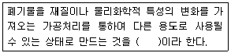
- 재활용(Recycling)
- 재사용(Reuse)
- 재이용(Reutilization)
- 재회수(Recovery)
(정답률: 65%)
13. 퇴비화 하기 위해 함수율 97%인 분뇨와 함수율 30%인 쓰레기를 무게비 1:3으로 혼합했을 때의 함수율은? (단, 분뇨와 쓰레기의 비중은 같다고 가정함)
- 62%
- 57%
- 52%
- 47%
(정답률: 70%)
14. 쓰레기 발생량 조사방법에 관한 설명으로 옳지 않은 것은?
- 적재차량 계수분석 : 쓰레기의 밀도 또는 압축강도를 정확하게 파악할 수 있다.
- 직접계근법 : 적재차량 계수분석방법에 비하여 작업량이 많고 번거롭다.
- 물질수지법 : 주로 산업폐기물 발생량을 추산할 때 이용한다.
- 물질수지법 : 물질수지를 세울 수 있는 상세한 데이터가 있어야 하며 비용이 많이 든다.
(정답률: 67%)
15. 수거노선의 설정요령으로 적합하지 않은 것은?
- 수거지점과 수거빈도를 결정하는데 기존 정책이나 규정을 참고한다.
- 간선도로 부근에서 시작하고 끝나도록 배치한다.
- 반복운행을 피하도록 한다.
- 반시계방향으로 수거노선을 설정한다.
(정답률: 83%)
16. 폐기물의 입도를 분석한 결과 입도누적 곡선상 최소 입경으로부터 10% 입경 2mm, 20% 3mm, 40% 5mm, 60% mm, 80% 10mm, 90% 20mm였을 때 균등계수는?
- 1.7
- 2.5
- 4.0
- 5.0
(정답률: 50%)
17. 최소 크기가 10cm인 폐기물을 2cm로 파쇄하고자 할 때 Kick's 법칙에 의한 소요 동력은 동일 폐기물을 4cm로 파쇄할 때 소요되는 동력의 몇 배인가? (단, n=1로 가정한다.)
- 1.76배
- 1.62배
- 1.56배
- 1.42배
(정답률: 64%)
18. 어느 한 해 동안 A시에서 발생한 폐기물의 성분 중 비가연성이 중량비로서 67.5%였다. 지금 밀도가 650kg/m3인 폐기물 2m3있다면 가연성 물질의 양은? (단, 폐기물은 비연성과 가연성으로 나눈다.)
- 423kg
- 578kg
- 635kg
- 782kg
(정답률: 85%)
19. 압축기를 이용하여 부피 감소율 85%로 쓰레기를 압축시켰다. 이때 압축비는?
- 약 3.8
- 약 4.3
- 약 5.2
- 약 6.7
(정답률: 77%)
20. 어떤 선별 장치로 투입되는 양이 4ton/hr이고 회수량은 2400kg/hr이다. 이 회수량 중에서 2000kg/hr가 선별하려는 대상물질이며 제거된 물질 중 300kg/hr이 회수대상물질이었다면 이 선별장치의 선별효율은? (단, Worrell식 적용)
- 약 49%
- 약 58%
- 약 67%
- 약 72%
(정답률: 43%)
2과목: 폐기물 처리 기술
21. 유기물(C6H12O6)을 혐기성(피산소성) 소화시킬 때 반응에 대한 설명으로 옳지 않은 것은?
- 유기물 1kg 분해 시 메탄이 0.37Sm3 생성된다.
- 유기물 1kg 분해 시 이산화탄소가 0.37Sm3 생성된다.
- 유기물 90kg 분해 시 메탄이 24kg 생성된다.
- 유기물 90kg 분해 시 이산화탄소가 24kg 생성된다.
(정답률: 50%)
22. 수분함량 95%(무게%)의 슬러지에 응집제를 소량 가해 농축시킨 결과 상등액과 침전 슬러지의 용적비가 3:5였다. 이 침전 슬러지의 함수율(%)은? (단, 응집제의 주입량은 소량이므로 무시한다. 농축전후 슬러지 비중은 1로 한다.)
- 94
- 92
- 90
- 88
(정답률: 50%)
23. 고농도 액상 폐기물의 혐기성 소화 공정 중 중온소화와 고온소화의 비교에 관한 내용으로 옳지 않은 것은?
- 부하능력은 고온소화가 우수하다.
- 탈수여액의 수질은 고온소화가 우수하다.
- 병원균의 사멸은 고온소화가 유리하다.
- 중온소화에서 미생물활성이 쉽다.
(정답률: 53%)
24. 토양세척법 처리에 가장 부적합한 토양 입경의 정도는?
- 자갈
- 중간모래
- 점토
- 미사
(정답률: 53%)
25. 1일 쓰레기의 발생량이 10톤인 지역에서 트렌치 방식으로 매립장을 계획한다면 1년간 필요한 토지 면적은? (단, 도랑의 깊이는 2.5m이고 매립에 따른 쓰레기의 부피감소율은 60%, 매립 전 쓰레기 밀도는 400kg/m3이다. 기타 조건은 고려하지 않음)
- 1153m2/년
- 1460m2/년
- 2410m2/년
- 2840m2/년
(정답률: 64%)
26. Soil Washing 기법을 적용하기 위하여 토양의 입도분포를 조사한 결과가 다음과 같을 경우, 유효입경(mm)과 곡률계수는 각각 얼마인가? (단, D10, D30, D60는 각각 통과백분율 10%, 30%, 60%에 해당하는 입자 직경이다.)
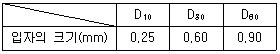
- 유효입경: 0.25, 곡률계수: 1.6
- 유효입경: 3.60, 곡률계수: 1.6
- 유효입경: 0.25, 곡률계수: 2.6
- 유효입경: 3.60, 곡률계수: 2.6
(정답률: 53%)
27. 토양수분장력이 100000cm의 물기둥 높이의 압력과 같다면 pF(Potential Force) 값은?
- 4.5
- 5.0
- 5.5
- 6.0
(정답률: 53%)
28. 분뇨처리과정 중 농축슬러지 100톤의 고형물 농도가 5%이고 이의 유기물 함유율이 70%이며, 다시 소화과정에 의하여 유기물의 80%가 분해되고 소화된 슬러지의 고형물 함량이 6%일 때 농축 슬러지는 얼마만큼 감소되는가? (단, 슬러지 비중 1.0)
- 45톤 감소됨
- 54톤 감소됨
- 63톤 감소됨
- 72톤 감소됨
(정답률: 69%)
29. 합성차수막의 재료 중 High-Density Polyethylene에 관한 설명으로 옳지 않은 것은?
- 유연하여 손상의 우려가 적다.
- 대부분의 화학물질에 대한 저항성이 높다.
- 온도에 대한 저항성이 높다.
- 접합상태가 양호하다.
(정답률: 18%)
30. 다음은 토양오염의 대책에 관한 사상이다. 예방 대책과 거리가 먼 것은?
- 광산 및 채석장의 침전지 설치
- 비료의 적정량 사용
- 토양오염 측정망 설치 운영
- 객토
(정답률: 48%)
31. 인구 600000명에 1인당 하루 1.3kg의 쓰레기를 배출하는 지역에 면적이 500000m2인 매립장을 건설하려고 한다. 강우량이 1350mm/year인 경우 침출수 발생량은? (단, 강우량 중 60%는 증발되고 40%만 침출수로 발생된다고 가정하고, 침출수 비중은 1, 기타 조건은 고려하지 않음)
- 약 140000톤/년
- 약 180000톤/년
- 약 240000톤/년
- 약 270000톤/년
(정답률: 50%)
32. 밀도가 1.2g/cm3인 폐기물 10kg에 고형화재료를 5kg 첨가하여 고형화시킨 결과 밀도가 2.5g/cm3으로 증가하였다. 폐기물의 부피변화율(VCF)은?
- 0.58
- 0.64
- 0.72
- 0.84
(정답률: 55%)
33. COD/TOC＜ 2.0, BOD/COD＜ 0.1인 매립지에서 발생하는 침출수 처리에 가장 효과적이지 못한 공정은? (단, 매립연한이 10년 이상, COD(mg/L) 500 이하)
- 생물학적 처리공정
- 역삼투공정
- 이온교환공정
- 활성탄흡착공정
(정답률: 50%)
34. 침출수 처리를 위한 Fenton 산화법에 관한 설명으로 옳지 않은 것은?
- 여분의 과산화수소수는 후처리의 미생물 성장에 영향을 줄 수 있다.
- 최적반응을 위해 침출수 pH를 9~10으로 조정한다.
- Fenton액을 첨가하여 난분해성 유기물질을 산화시킨다.
- Fenton액은 철염과 과산화수소수를 포함한다.
(정답률: 77%)
35. 유해성 물질별로 처리가 가능한 기술과 가장 거리가 먼 것은?
- 납-응집
- 비소-침전
- 수은-흡착
- 시안-용매추출
(정답률: 64%)
36. RDF 소각로의 단점이나 문제점에 대한 설명과 가장 거리가 먼 내용은?
- 염소함량보다 유황함량에 따른 다량의 SOX 발생이 문제가 된다.
- 소각시설의 부식발생으로 인하여 시설수명이 단축될 수 있다.
- 연료공급의 신뢰성 문제가 있을 수 있다.
- 시설비가 고가이고 숙련된 기술이 필요하다.
(정답률: 43%)
37. 슬러지를 건조하여 농토로 사용하기 위하여 여과기로 원래 슬러지의 함수율을 40%로 낮추고자 한다. 여과속도가 10kg/m2·hr(건조 고형물 기준), 여과 면적 10m2의 조건에서 시간당 탈수슬러지 발생량은?
- 약 186kg/hr
- 약 167kg/hr
- 약 154kg/hr
- 약 143kg/hr
(정답률: 60%)
38. 고화처리법 중 열가소성 플라스틱법 (Thermoplastic Process)에 관한 설명으로 옳지 않은 것은?
- 용출손실률이 시멘트 기초법보다 높다.
- 고온분해되는 물질에는 사용할 수 없다.
- 혼합률이 비교적 높다.
- 고화처리된 폐기물 성분을 회수하여 재활용할 수 있다.
(정답률: 29%)
39. 폐기물 고형화처리법 중 유리화법에 관한 내용과 가장 거리가 먼 것은?
- 에너지 집약적이다.
- 특수장치의 숙련된 인원이 필요하다.
- 첨가제의 비용이 비교적 싸다.
- 2차 오염물질의 발생이 많다.
(정답률: 47%)
40. 열분해 공정의 장점과 가장 거리가 먼 것은?
- 배가가스량이 적다.
- 연속식 운전으로 효율이 높다.
- 황분, 중금속분이 회분 중에 고정되는 비율이 높다.
- 환원성 분위기를 유지할 수 있어서 Cr+3가 Cr+6으로 변화하지 않는다.
(정답률: 35%)
3과목: 폐기물 소각 및 열회수
41. CH4 65%, C2H6 20%, C3H8 15%로 구성된 기체연료 8Sm3을 연소할 경우 필요한 이론공기량(Sm3)은?
- 약 75
- 약 1⑤
- 약 135
- 약 165
(정답률: 53%)
42. 열교환기 종류에 대한 설명으로 옳지 않은 것은?
- 과열기: 부착 위치에 따라 전열 형태가 다르며 방사형, 대류형, 방사·대류형 과열기로 구분된다.
- 재열기: 대개 과열기의 앞쪽에 배치되어 보일러의 과열을 방지한다.
- 절탄기: 연도에 설치되며 보일러 전열면을 통하여 연소가스의 여열로 보일러 급수를 예열하여 보일러의 효율을 높이는 장치이다.
- 공기예열기: 연료의 착화와 연소를 양호하게 하고 연소온도를 높이는 효과가 있다.
(정답률: 57%)
43. 액체 연료를 공기비 1.2로 연소시킬 때, 배출가스 조성을 분석한 결과 CO2가 16.5% 였다면 (CO2)max는?
- 8.3%
- 14.2%
- 16.5%
- 19.8%
(정답률: 32%)
44. 연소기 중 다단로에 대한 설명으로 옳지 않은 것은?
- 신속한 온도반응으로 보조연료 사용 조절이 용이하다.
- 다량의 수분이 증발되므로 수분함량이 높은 폐기물의 연소가 가능하다.
- 물리·화학적으로 성분이 다른 각종 폐기물을 처리할 수 있다.
- 체류시간이 길어 휘발성이 적은 폐기물 연소에 유리하다.
(정답률: 73%)
45. 에탄(C2H6)의 이론적 연소 시 부피기준 AFR(air-fuel ratio, mols air/mol fuel)은?
- 약 10.5
- 약 12.5
- 약 14.2
- 약 16.7
(정답률: 43%)
46. 가로 1.5m, 세로 2.0m, 높이 15.0m의 연소실에서 저위발열량 10000kcal/kg의 중유를 1시간에 200kg 연소한다. 연소실 열발생률(kcal/m3·hr)은?
- 약 2.2×104
- 약 4.4×104
- 약 6.6×104
- 약 8.8×104
(정답률: 70%)
47. 연소장치에서 공기비가 큰 경우에 나타나는 현상과 가장 거리가 먼 것은?
- 연소실에서 연소온도가 낮아진다.
- 배기가스 중 질소산화물량이 증가한다.
- 불완전연소로 일산화탄소량이 증가한다.
- 통풍력이 강하여 배기가스에 의한 열손실이 크다.
(정답률: 42%)
48. 증기터빈 분류관점이 증기이용방식인 경우의 터빈 형식으로 가장 옳은 것은?
- 축류 터빈
- 배압 터빈
- 반동 터빈
- 복류 터빈
(정답률: 46%)
49. 분진 및 유해가스의 동시 처리가 가능한 스크러버의 장점이라 볼 수 없는 것은?
- 한번 제거된 입자는 다시 처리가스 속으로 재비산되지 않는다.
- 전기, 여과집진장치보다 좁은 공간에 설치가 가능하다.
- 고온다습한 가스나 연소성 및 폭발성 가스의 처리가 가능하다.
- 유지관리비가 저렴하고 부식성 가스 용해로 인한 부식을 방지할 수 있다.
(정답률: 28%)
50. 용적밀도가 800kg/m3인 폐기물을 처리하는 소각로에서 질량감소율과 부피감소율이 각각 90%, 95%인 경우 이 소각로에서 발생하는 소각재의 밀도는?
- 1500kg/m3
- 1600kg/m3
- 1700kg/m3
- 1800kg/m3
(정답률: 65%)
51. 탄화도가 클수록 석탄이 가지게 되는 성질에 관한 내용으로 틀린 것은?
- 고정탄소의 양이 증가한다.
- 휘발분이 감소한다.
- 연속 속도가 커진다.
- 착화온도가 높아진다.
(정답률: 50%)
52. 탄소 70%, 수소 30%로 구성된 액상폐기물을 완전 연소할 때 (CO2)max은? (단, 표준상태, 이론 건조가스 기준)
- 약 9.1%
- 약 10.4%
- 약 13.1%
- 약 14.8%
(정답률: 34%)
53. 기체연료인 메탄(CH4)의 고위 발열량이 9500kcal/Sm3 이라면 저위 발열량(kcal/Sm3)은?
- 8260
- 8380
- 8420
- 8540
(정답률: 60%)
54. 도시생활폐기물을 1일 50톤 소각 처리하고자 한다. 1일 소각운전시간 8시간, 소각대상물의 저위발열량 2500kcal/kg, 연소실 열부하율 1.2×105kcal/m3·hr일 때 소각로의 연소실 유효용적은?
- 약 110.4m3
- 약 130.2m3
- 약 160.0m3
- 약 180.7m3
(정답률: 66%)
55. 저위발열량이 3500kcal/Sm3인 가스연료의 이론연소온도는? (단, 이론연소가스량은 10Sm3/Sm3, 연료연소가스의 평균정압비열은 0.4kcal/Sm3·℃, 기준온도는 15℃, 공기는 예열되지 않으며, 연소 가스는 해리되지 않는 것으로 한다.)
- 890℃
- 910℃
- 930℃
- 950℃
(정답률: 50%)
56. 황화수소 2Sm3의 완전연소에 필요한 이론공기량은? (단, 황은 완전연소하여 전량 이산화황으로 된다.)
- 10.8 Sm3
- 12.1 Sm3
- 14.3 Sm3
- 16.8 Sm3
(정답률: 56%)
57. 탄소 1kg을 완전연소하는데 소요되는 이론공기량(Sm3/kg)은?
- 5.63
- 8.89
- 13.67
- 18.67
(정답률: 66%)
58. 어떤 폐기물 1kg의 성분조성이 다음과 같을 때 실제공기량이 8Sm3이었다면 과잉공기량은?
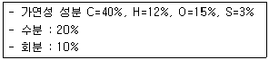
- 1.65 Sm3
- 2.25 Sm3
- 3.75 Sm3
- 4.⑤ Sm3
(정답률: 38%)
59. 어떤 도시 폐기물의 조성이 함수율 25%, 불연성분 15%, 탄소 25%, 수소 8%, 산소 25%, 황 2%일 때 고위발열량은? (단, Dulong 식 적용)
- 약 3740 kcal/kg
- 약 4970 kcal/kg
- 약 5260 kcal/kg
- 약 6620 kcal/kg
(정답률: 43%)
60. 황성분이 0.8%인 폐기물을 20t/hr 소각하는 소각로에서 배기가스 중의 SO2를 CaCO3로 완전히 탈황하는 경우 이론상 하루에 필요한 CaCO3의 양은? (단, 폐기물 중의 S는 모두 SO2로 전환되면, 소각로의 1일 가동시간은 16시간, Ca 원자량:40)
- 1.0t/day
- 2.0t/day
- 4.0t/day
- 8.0t/day
(정답률: 40%)
4과목: 폐기물 공정시험기준(방법)
61. 자외선/가시선 분광법을 적용한 구리 측정에 관한 내용으로 옳은 것은?
- 정량한계는 0.002mg/L이다.
- 적갈색의 킬레이트 화합물이 생성된다.
- 흡광도는 520nm에서 측정한다.
- 정량범위는 0.01~0.⑤mg/L이다.
(정답률: 48%)
62. 다음은 자외선/가시선 분광법으로 구리를 측정하는 방법에 관한 내용이다. ( )안에 옳은 내용은?
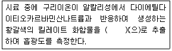
- 아세트산부틸
- 사염화탄소
- 노말헥산
- 디티존
(정답률: 40%)
63. 다음은 연속식 연소방식의 소각재 반출설비에서 시료를 채취하는 내용이다. ( )안에 옳은 내용은?
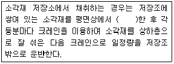
- 4등분
- 5등분
- 6등분
- 9등분
(정답률: 25%)
64. 감응계수에 관한 내용으로 옳은 것은?
- 검정곡선 작성용 표준용액의 농도(C)에 대한 반응값(R)으로 구한다. (감응계수=R/C)
- 검정곡선 작성용 표준용액의 농도(C)에 대한 반응값(R)으로 구한다. (감응계수=C/R)
- 검정곡선 작성용 표준용액의 농도(C)에 대한 반응값(R)으로 구한다. (감응계수=R×C)
- 검정곡선 작성용 표준용액의 농도(C)에 대한 반응값(R)으로 구한다. (감응계수=R2×C)
(정답률: 36%)
65. 다음은 교호삽법에 따른 시료의 분할채취방법이다. ( )안에 옳은 내용은?
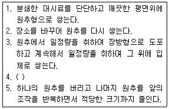
- 육면체의 측면을 교대로 돌면서 균등량씩을 취하여 두 개의 원추를 쌓는다.
- 이것을 가로 4등분, 세로 5등분으로 나누고 각 등분의 일정량을 취하여 두 개의 원추를 쌓는다.
- 육면체의 마주보는 면을 취하여 두 개의 원추를 쌓는다.
- 입체를 평평하게 하여 4등분한 후 마주보는 면을 각각 취하여 두 개의 원추를 쌓는다.
(정답률: 43%)
66. 취급 또는 저장하는 동안에 기체 또는 미생물이 침입하지 않도록 내용물을 보호하는 용기는?
- 차광용기
- 밀봉용기
- 기밀용기
- 밀폐용기
(정답률: 45%)
67. 기체크로마토그래피를 이용한 유기인 분석 시정량한계로 옳은 것은?
- 사용하는 장치 및 측정조건에 따라 다르나 각 성분당 0.5mg/L이다.
- 사용하는 장치 및 측정조건에 따라 다르나 각 성분당 0.⑤mg/L이다.
- 사용하는 장치 및 측정조건에 따라 다르나 각 성분당 0.0⑤mg/L이다.
- 사용하는 장치 및 측정조건에 따라 다르나 각 성분당 0.00⑤mg/L이다.
(정답률: 27%)
68. 대상폐기물의 양이 1100톤인 경우 시료의 최소 수는?
- 30
- 36
- 50
- 60
(정답률: 67%)
69. 다음은 세균배양 검사법으로 감염성 미생물을 측정할 때 시료채취 및 관리에 관한 내용이다. ( )안에 옳은 내용은?
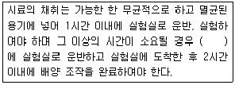
- 4℃ 이하로 냉장하여 8시간 이내
- 4℃ 이하로 냉장하여 6시간 이내
- 10℃ 이하로 냉장하여 8시간 이내
- 10℃ 이하로 냉장하여 6시간 이내
(정답률: 45%)
70. 폐기물 시료에 대해 강열감량과 유기물함량을 조사하기 위해 다음과 같은 실험을 하였다. 아래와 같은 결과를 이용한 강열감량은?
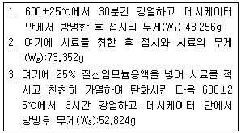
- 약 74%
- 약 76%
- 약 82%
- 약 89%
(정답률: 63%)
71. 총칙에서 규정하고 있는 내용으로 옳지 않은 것은?
- 표준온도는 0℃, 찬 곳은 1~15℃, 열수는 약 100℃, 온수는 50~60℃를 말한다.
- '약'이라 함은 기재된 양에 대하여 ±10% 이상의 차가 있어서는 안 된다.
- 무게를 '정확히 단다'라 함은 규정된 수치의 무게를 0.1mg까지 다는 것을 말한다.
- '감압 또는 진공'이라 함은 따로 규정이 없는 한 15mmhg 이하를 뜻한다.
(정답률: 54%)
72. 시안(CN-)의 측정방법을 적절하게 짝지은 것은?(단, 폐기물공정시험기준(방법) 기준)
- 이온크로마토그래피, 원자흡수분광광도법
- 이온전극법, 자외선/가시선 분광법
- 기체크로마토그래피, 원자흡수분광광도법
- 자외선/가시선 분광법, 유도결합플라즈마-원자발광분광법
(정답률: 59%)
73. 자외선/가시선 분광법으로 카드뮴을 분석할 때 흡수셀이 더러운 경우 세척방법으로 옳은 것은?
- 과황산칼륨용액(2W/V%)에 소량의 음이온 계면활성제를 가한 용액에 흡수셀을 담가 놓고 필요하면 40~50℃로 약 10분간 가열한다.
- 과망간산칼륨용액(2W/V%)에 소량의 음이온 계면활성제를 가한 용액에 흡수셀을 담가 놓고 필요하면 40~50℃로 약 10분간 가열한다.
- 탄산나트륨용액(2W/V%)에 소량의 음이온 계면활성제를 가한 용액에 흡수셀을 담가 놓고 필요하면 40~50℃로 약 10분간 가열한다.
- 에틸알코올용액(2W/V%)에 소량의 음이온 계면활성제를 가한 용액에 흡수셀을 담가 놓고 필요하면 40~50℃로 약 10분간 가열한다.
(정답률: 15%)
74. 유리전극법으로 수소이온농도를 측정할 때의 개요 내용으로 옳지 않은 것은?
- pH를 0.1까지 측정한다.
- 유리전극은 일반적으로 용액의 색도, 탁도, 콜로이드성 물질에 간섭을 받지 않는다.
- 유리전극은 일반적으로 용액의 산화 및 환원성 물질들 그리고 염도에 의해 간섭을 받지 않는다.
- pH 10 이상에서 나트륨에 의해 오차가 발생할 수 있는데 이는 '낮은 나트륨 오차 전극'을 사용하여 줄일 수 있다.
(정답률: 53%)
75. 용출시험법 중 시료용액의 조제에 관한 설명으로 옳은 것은?
- 용매의 pH는 5.8~6.3으로 조절한다.
- 시료와 용매의 비율은 1:20(W:V)의 비로 한다.
- 시료와 용매를 1000mL 삼각플라스크에 넣어 혼합한다.
- 용매의 pH를 조절하기 위해 질산을 사용한다.
(정답률: 48%)
76. 석면(X선 회절기법) 측정에 관한 내용으로 옳지 않은 것은?
- X선 회절기로 판단할 수 있는 석면의 정량범위는 0.1~100.0wt%이다.
- 고형폐기물을 포함한 건축자재의 분석에 사용되며 유기, 무기성분의 조합으로 된 모든 석면 함유 물질에서 석면 유무를 판단할 수 있다.
- 시료의 양은 1회에 최소한 면적단위로는 1cm2, 부피단위로는 1cm3, 무게단위로는 1g 이상 채취한다.
- 소형크기의 석면 함유 의심 폐제품의 경우, 시료는 제품별로 채취하고 채취자가 시료량이 부족하다고 판단하는 경우에는 가능한 경우 2개 이상을 채취한다.
(정답률: 36%)
77. 기체크로마토그래피로 휘발성 저급염소화 탄화수소류 측정 시 간섭물질에 대한 설명으로 옳지 않은 것은?
- 추출용매 간섭물질이 발견되면 증류하거나 칼럼 크로마토그래피에 의해 제거한다.
- 디클로로메탄과 같이 머무름 시간이 짫은 화합물은 용매의 피크와 겹치지 않아 분석의 방해가 적다.
- 플루오르화탄소나 디클로로메탄과 같은 휘발성 유기물은 보관이나 운반 중에 격막을 통해 시료 안으로 확산되어 시료를 오염시킬 수 있으므로 현장 바탕시료로서 이를 점검하여야 한다.
- 이 실험으로 끓는점이 높거나 극성 유기 화합물들이 함께 추출되므로 이들 중에는 분석을 간섭하는 물질이 있을 수 있다.
(정답률: 34%)
78. 원자흡수분광광도법으로 비소를 측정할 때 사용되는 광원부의 광원램프는?
- 비소 텅스텐 램프
- 비소 중수소 방전관
- 비소 속 빈 음극램프
- 비소 나트륨 램프
(정답률: 27%)
79. 자외선/가시선 분광법으로 크롬을 측정할 대 시료 중 총 크롬을 6가 크롬으로 산화시키는데 사용하는 시약은?
- 과망간산칼륨
- 이염화주석
- 시안화칼륨
- 디티오황산나트륨
(정답률: 74%)
80. 비소를 원자흡수분광광도법으로 측정할 때 시료 중 비소를 3가 비소로 환원시키기 위하여 사용되는 시약은?
- 염화제이수은
- 이염화주석
- 염화제일철
- 염화제이철
(정답률: 70%)
5과목: 폐기물 관계 법규
81. 폐기물처리업자나 폐기물처리 신고자가 휴업, 폐업 또는 재개업을 한 경우에 휴업, 폐업 또는 재개업을 한 날부터 며칠 이내에 신고서(서류 첨부)를 시도 지사나 지방환경관서의 장에게 제출하여야 하는가?
- 3일
- 10일
- 20일
- 30일
(정답률: 64%)
82. 다음 의료폐기물 중 일반의료폐기물에 해당되는 것은?
- 혈액이 함유되어 있는 탈지면
- 파손된 유리재질의 시험기구
- 폐화학치료제
- 한방침
(정답률: 73%)
83. 시도지사가 폐기물처리 신고자에게 처리금지를 갈음하여 부과할 수 있는 과징금의 최대액수는?
- 2천만원
- 5천만원
- 1억원
- 2억원
(정답률: 56%)
84. 폐기물처분시설의 매립시설의 기술관리인의 자격기준에 해당되지 않는 것은?
- 화공기사
- 대기환경기사
- 토목기사
- 토양환경기사
(정답률: 58%)
85. 다음은 특별자치도지사, 시장, 군수, 구청장이 생활폐기물 수집, 운반을 대행하게 할 경우의 준수사항에 관한 내용이다. ( )안에 옳은 내용은?
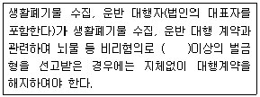
- 500만원
- 600만원
- 700만원
- 800만원
(정답률: 27%)
86. 폐기물 관리 종합계획에 포함되어야 할 사항과 가장 거리가 먼 것은?
- 재원 조달 계획
- 폐기물별 관리 현황
- 종합계획의 기조
- 종전의 종합계획에 대한 평가
(정답률: 36%)
87. 폐기물 관리의 기본원칙 내용과 가장 거리가 먼것은?
- 누구든지 폐기물의 발생을 최대한으로 억제하기 위해 생활방식을 개선하고 폐기물을 재활용함으로써 폐기물 배출을 최소화하여야 한다.
- 폐기물은 그 처리과정에서 양과 유해성을 줄이도록 하는 등 환경보전과 국민건강 보호에 적합하게 처리되어야 한다.
- 폐기물은 소각, 매립 등의 처분을 하기보다는 우선적으로 재활용함으로써 자원생산성의 향상에 이바지하도록 하여야 한다.
- 국내에서 발생한 폐기물은 가능하면 국내에서 처리되어야 하고, 폐기물의 수입은 되도록 억제되어야 한다.
(정답률: 36%)
88. 한국환경공단, 특별시장, 광역시장·도지사 및 특별자치도지사 또는 시장·군수·구청장이 실시하는 폐기물 통계조사 중 폐기물 발생원 등에 관한 조사(5년마다 현장조사에 기초하여 작성) 항목과 가장 거리가 먼 것은?
- 발생원별·계절별 폐기물의 수분, 가연분, 회분과 발열량 및 원소분석
- 가정부문과 비가정부문의 발생원별 폐기물 조성비
- 발생원별·계절별 폐기물의 탄소, 수소, 질소 등의 원소분석
- 폐기물처분시설 및 재활용 시설 설치·운영 현황
(정답률: 39%)
89. 주변지역 영향 조사대상 폐기물처리시설(폐기물 처리업자가 설치, 운영) 기준으로 틀린 것은?
- 매립면적 15만 제곱미터 이상의 사업장 일반폐기물 매립시설
- 매립면적 15만 제곱미터 이상의 사업장 지정폐기물 매립시설
- 1일 처분능력이 200톤 이상인 사업장 폐기물 소각시설
- 시멘트 소성로(폐기물의 연료로 사용하는 경우로 한정한다.)
(정답률: 11%)
90. 사업장 폐기물의 종류별 분류번호 중 지정폐기물 외의 사업장 폐기물의 분류번호로 옳은 것은?
- 30-01-00 유기성 오니류
- 41-01-00 폐합성고분자화합물
- 51-06-00 폐주물사 및 폐사
- 61-08-00 소각재
(정답률: 27%)
91. 지정폐기물의 종류 중 유해물질 함유 폐기물(환경부령으로 정하는 물질을 함유한 것으로 한정한다)에 관한 기준으로 틀린 것은?
- 광재(철광 원석의 사용으로 인한 고로 슬래그는 제외한다.)
- 분진(대기오염 방지시설에서 포집된 것으로 한정하되, 소각시설에서 발생되는 것은 제외한다.)
- 폐흡착제 및 폐흡수제(용출 함량이 1% 이상 함유된 흡착제 및 흡수제로 한정한다.)
- 폐내화물 및 재벌구이 전에 유약을 바른 도자기 조각
(정답률: 30%)
92. 생활폐기물이 배출되는 토지나 건물의 소유자, 점유자 또는 관리자는 관할 특별자치시, 특별자치도, 시·군·구의 조례로 정하는 바에 따라 생활환경 보전상 지장이 없는 방법으로 그 폐기물을 스스로 처리하거나 양을 줄여서 배출하여야 한다. 이를 위반한자에 대한 과태료 기준은?
- 100만원 이하의 과태료 부과
- 300만원 이하의 과태료 부과
- 500만원 이하의 과태료 부과
- 1000만원 이하의 과태료 부과
(정답률: 64%)
93. 다음은 폐기물처리 신고를 하고 폐기물을 재활용할 수 있는 자에 관한 기준이다. ( )안에 옳은 내용은? (단, 동·식물성 잔재물 등의 폐기물을 자신의 농경지에 퇴비로 사용하는 등의 방법으로 재활용 하는 자로서 환경부령으로 정하는 자(다른 자의 폐기물을 재활용하는 자 기준)
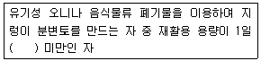
- 600kg
- 1톤
- 3톤
- 5톤
(정답률: 43%)
94. 기술관리인을 두어야 할 폐기물처리시설 기준으로 틀린 것은? (단, 폐기물처리업자가 운영하는 폐기물처리시설 제외)
- 용해로(폐기물에서 비철금속을 추출하는 경우로 한정한다)로서 시간당 재활용 능력이 600킬로그램 이상인 시설
- 멸균분쇄시설로서 시간당 처분능력이 200킬로그램 이상인 시설
- 소각열회수시설로서 시간당 재활용능력이 600킬로그램 이상인 시설
- 사료화·퇴비화 또는 연료화시설로서 1일 재활용 능력이 5톤 이상인 시설
(정답률: 42%)
95. 폐기물처리리설은 환경부령으로 정하는 기준에 맞게 설치하되, 환경부령으로 정하는 규모 미만의 폐기물 소각시설을 설치·운영하여서는 아니 된다. 이를 위반하여 설치가 금지되는 폐기물 소각시설을 설치·운영한 자에 대한 벌칙 기준은?
- 3년 이하의 징역이나 2천만원 이하의 벌금
- 2년 이하의 징역이나 1천만원 이하의 벌금
- 1년 이하의 징역이나 5백만원 이하의 벌금
- 5백만원 이하의 벌금
(정답률: 17%)
96. 폐기물처리시설(매립시설)의 사용을 끝내거나 폐쇄하려할 때 시도지사나 지방환경관서의 장에게 제출하는 폐기물매립시설 사후관리계획서에 포함되어야 하는 사항과 가장 거리가 먼 것은?
- 빗물배제계획
- 지하수 수질조사계획
- 구조물과 지반 등의 안정도 유지계획
- 침출수 관리계획(관리형 매립시설은 제외한다.)
(정답률: 28%)
97. 폐기물처리시설인 재활용시설 중 화학적 재활용 시설이 아닌 것은?
- 고형화·고화시설
- 반응시설(중화·산화·환원·중합·축합·치환 등의 화학반응을 이용하여 폐기물을 재활용하는 단위시설을 포함한다.)
- 연료화 시설
- 응집·침전시설
(정답률: 60%)
98. 폐기물처리업의 업종과 그 영업내용으로 틀린것은?
- 폐기물 수집·운반업·폐기물을 수집하여 재활용 또는 처분장소로 운반하거나 폐기물을 수출하기 위하여 수집·운반하는 영업
- 폐기물 최종처분업: 폐기물최종처분시설을 갖추고 폐기물을 매립 등(해역 배출은 제외한다)의 방법으로 최종 처분하는 영업
- 폐기물 종합처분업: 폐기물 중간처분시설 및 최종 처분시설을 갖추고 폐기물의 중간처분과 최종처분을 함께 하는 영업
- 폐기물 최종재활용업: 폐기물 최종재활용 시설을 갖추고 환경부장관이 고시에 따른 용도 및 방법으로 폐기물을 재활용하는 영업
(정답률: 25%)
99. 다음에 언급된 '대통령령으로 정하는 기간'으로 옳은 것은? (단, 동물성 잔재물과 의료폐기물 중 조직물류폐기물 등 부패나 변질의 우려가 있는 폐기물 기준)
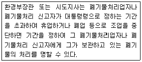
- 3일
- 5일
- 10일
- 15일
(정답률: 58%)
100. 폐기물 수출신고를 하려는 자가 폐기물의 발생지를 관할하는 지방환경관서의 장에게 제출하는 신고서에 첨부하여야 하는 서류가 아닌 것은?
- 수출폐기물의 운반계획서
- 수출가격이 본선 인도가격(F.O.B)으로 명시된 수출계약서나 주문서 사본
- 수출폐기물 처리계획 확인서
- 수출폐기물의 운반계획서 사본(위탁운반하는 경우에만 첨부한다)
(정답률: 45%)